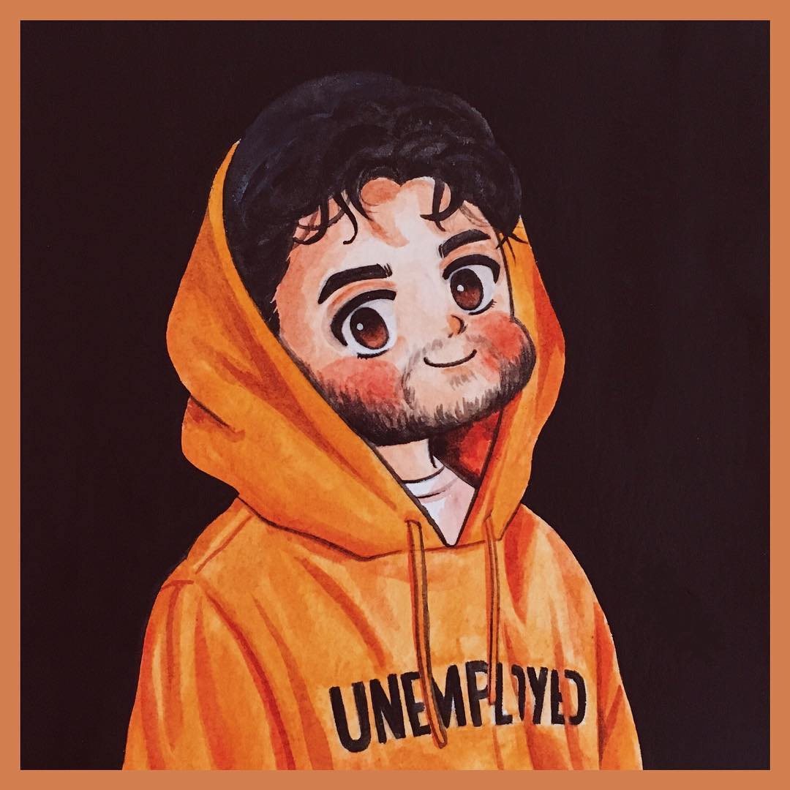
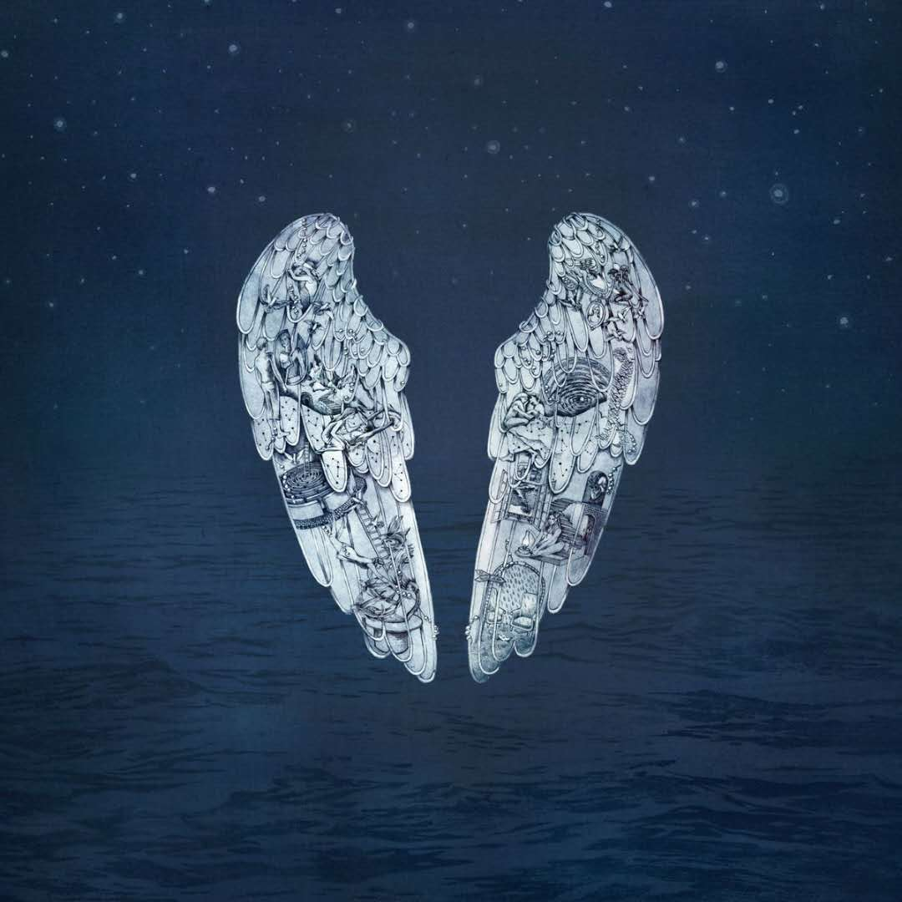
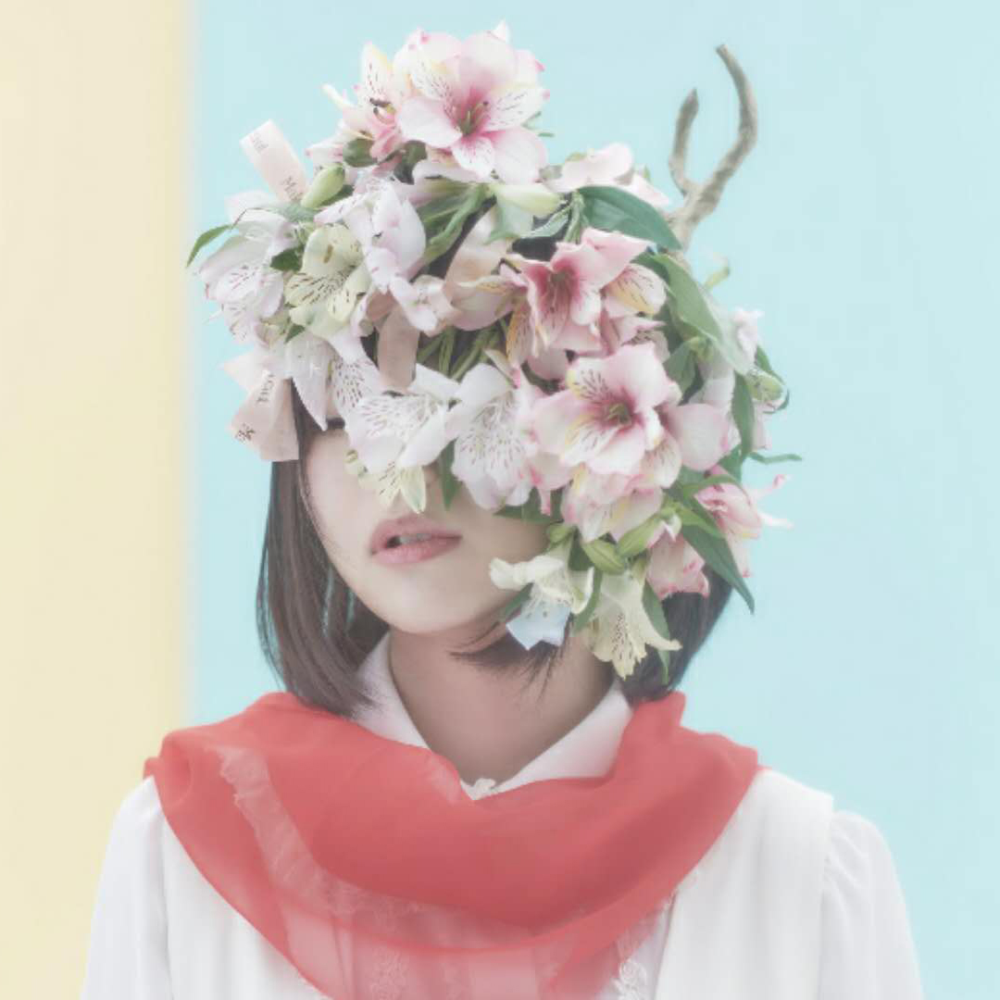

-

Who is R3HAB
荷兰电音的新一代潮流趋动人、品味制造者、瞩目偶像R3HAB，2013全球百大DJ排名58，年纪轻轻就被国际知名DJ、音乐制作人Afrojack签约于其Wall Recordings旗下，并被誉为“one of its biggest talents”！这位有着高超的DJ技巧和敏锐、创新的耳朵，富有能量且不断带来惊讶的天才是当之无愧引领新一代电音浪潮。
-

Ghost Stories
捷克蚀刻画家Mila Fürstová制作了《Ghost Stories》的全套专辑、单曲封面，这些封面图案是中世纪的绘画风格。专辑封面是一对天使翅膀，翅膀背景是夜幕下的海洋；而这对翅膀上绘有中世纪风格的小图画，包括一对爱侣、一位对镜而视的男性、飞舞的白鸽、圆形迷宫、烛光旁的少女、能看到飓风袭来的窗子等等。
-

かの
初次投稿是在2010年1月6日的《恋爱サーキュレーション》，她的声音很可爱， 所以被很多人认为是萝莉音。因为她的日语发音不怎么标准，所以也被一部分人认为她是才刚学会日语的天朝人。